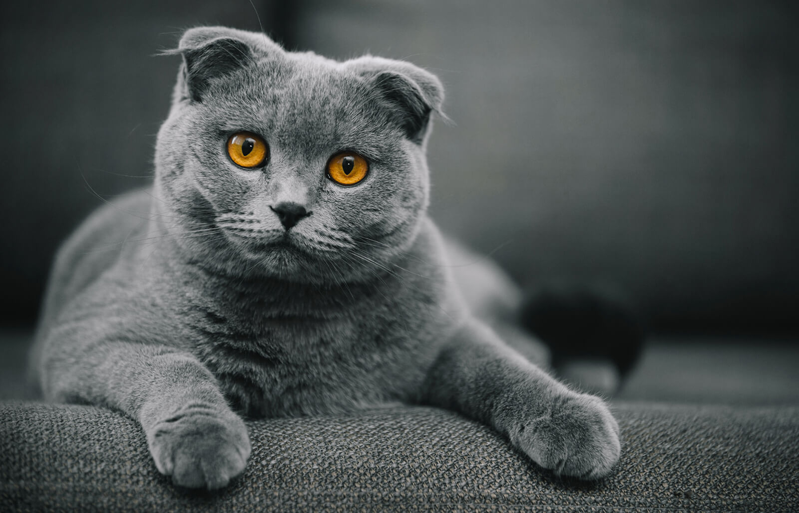
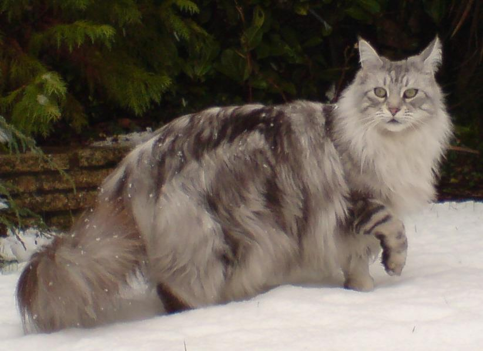

Cats!
Navigation
About Page
Dogs Page
Today's Work Playlist
Check out these cute cats!
Russian Blue

The Russian Blue is considered a long and slender cat with a regal air. They have a short coat that's straight, soft, and double-coated. Their coat is dark gray with silver tips, and they have no pattern, though some may have faint stripes as a kitten that will disappear as they grow. Their eyes start yellow with green rims and transition to being bright green as an adult. They're usually between 7 and 12 pounds, and they live for 15 to 20 years. They shed less than other cats and produce less of a known allergen, causing them to be considered a good cat breed for those who are allergic to cats.
The Russian Blue is considered to be sweet-tempered and loyal, the type of cat likely to greet their owner at the door. With that said, the Russian Blue cat still likes their alone time! Their socialization needs are not high, so you can safely leave them alone at home for a time, though of course they do still need some socializatoin. They're highly intelligent cats who require plenty of physical and mental stimulation, so it's important to give them toys. They're very vocal cats, and will likely loudly communicate to you when they want food or cuddles or to play.
Ragdoll

The Ragdoll breed is considered to be on the larger side as cat breeds go, typically weighing about 12 pounds. They have a long, silky coat that comes in a variety of colors, but they shed a lot and so they're not a good pet for anyone allergic to cats. They can have three different patterns on their fur: bicolor, point, or mitted. They have moderate grooming needs, needing to be brushed daily. Possible coat colors are frost, blue, chocolate, seal, lilac, cream, red, and bluecream. Their eyes are blue. They live between 7 and 12 years.
The Ragdoll is considered a rather social cat that enjoys being held, and gets along well with most people. They're even-tempered and are not upset by change, and are considered good cats for apartment living. They have moderate social needs, so while you can leave this cat alone, you shouldn't leave them alone for too long. They require interactive exercise, and enjoy playing with their owner at least once a day. They have an almost dog-like devotion to their owner, and are considered well-attuned to emotional needs.
Scottish Fold

The Scottish Fold is a medium-sized cat, weighing between 8 and 12 pounds, and can be easily recognized by their characteristic folded ears. They have coats of all lengths, and have moderate grooming requirements, needing to be brushed once a day. They shed a lot and are not good for those with allergies. Their coat comes in a variety of colors such as white, blue, cream, red, silver, cameo, brown, tortoiseshell, black, and bluecream. They can have several patterns, such as spots, shaded, tortoiseshell, calico, bicolor, tabby, and ticking, but they can also have solid color coats. Their eye colors can be blue, green, gold, and some have heterochromia. They live between 9 and 12 years.
Like the Ragdoll, the Scottish Fold is a more social cat with moderate social needs. Like the Ragdoll, they're not a cat you should leave alone for long, and they're likely to want some attention when you return home. If you have to be gone with relative frequency, a good strategy some owners have found to ensure their Scottish Fold does not get lonely is to get two Scottish Folds, who can then keep each other company. They are sweet, charming, and known to be affectionate and smart, though they are not known for possessing the dog-like devotion the Ragdoll has.
Maine Coon

Like the Ragdoll, Maine Coons are considered large for cats, and can weigh up to 18 pounds. They have long bodies and long, heavy fur, which can make them look even bigger than they already are. Their coat is straight and comes in a variety of colors such as white, black, blue, red, cream, brown, silver, cream, bluecream, and tortoiseshell. They can have solid color coats, but they can also have patterns like tortoiseshell, calico, bicolor, shaded, smoke, and tabby. Because they have long, heavy fur, they need to be not only brushed but also combed every day. They shed a lot, and so they're not good cats for those with allergies. They live between 9 and 13 years.
Maine Coons are considered adaptable and sweet cats, and have moderate social needs, requiring daily attention and wanting to be near you, though not necessarily on your lap. They love playing with their owners, and must have room to run as they're rather energetic cats. They are large and heavy for cats, so it is possible they will knock things over while running around. They love cat trees and perches. While very loving and affectionate with their owner and family, they can be wary of strangers, and take their time to make up their mind about whether or not a human has earned their trust.